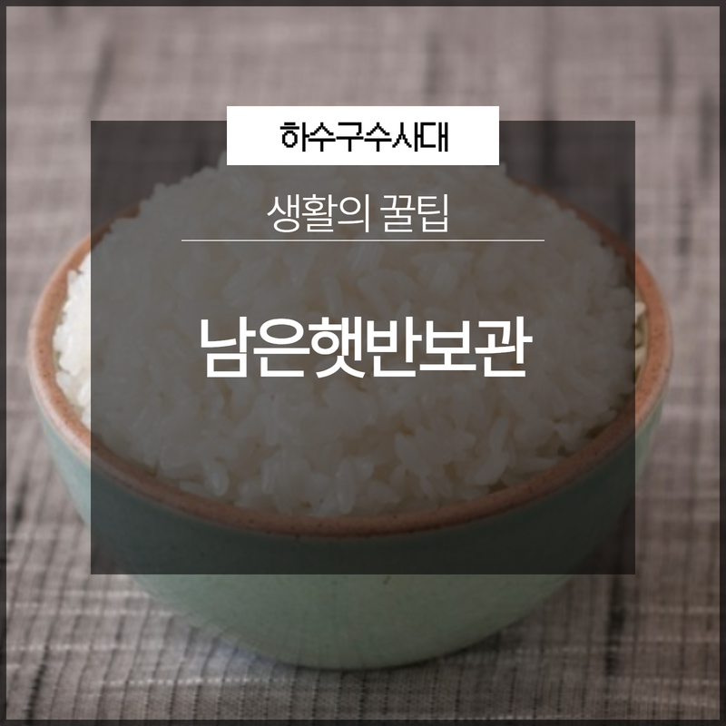
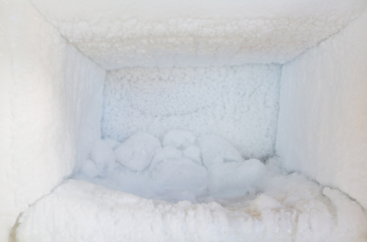
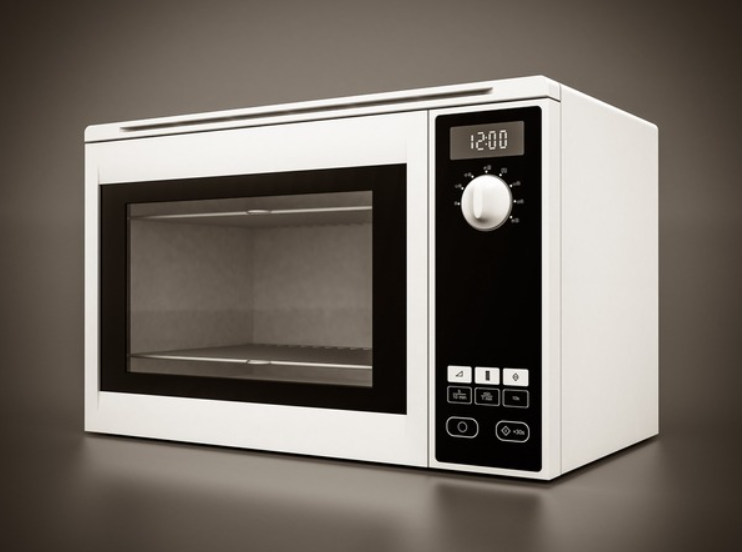

🏠 남은햇반보관 생활의 꿀팁
용인 하수구막힘 전문 시공 후기

📋 작업 개요
- 위치: 용인
- 서비스 유형: 하수구막힘, 뚫는업체
- 작업 일시: 2023. 3. 12. 11:52
- 업체명: 하수구수사대 (010-5615-2118)
🔍 문제 상황
안녕하세요 하수구수사대입니다.
시간이 지날수록 1인에서 2인 가구의 수가 증가하게 되면서 생활 속의 패턴들도 많이 바뀌고 있습니다. 그중에서 가장 많은 변화가 있는 것이 바로 식습관이 아닐까 생각을 하는데요. 1인 가구 같은 경우에는 간편식이나 일회용의 식품을 사용하게 되는 경우가 많다고 할 수 있습니다.
특히 많은 양의 밥을 할 필요가 없기 때문에 햇반과 같은 1회용 용기의 음식을 좀 더 선호하게 되는 것 같습니다. 햇반은 갑작스럽게 밥이 필요한 경우나 많은 양의 밥을 하지 않아도 될 때 아주 유용하게 쓰일 수 있는데요.
오늘은 남은햇반보관에 대한 정보를 살펴보겠습니다.

🔎 원인 분석
💡 전문가 진단: 오늘은 남은햇반보관에 대한 정보를 살펴보겠습니다.
햇반 같은 경우에는 일회용으로 완전히 밀봉이 되어 있기 때문에 한번 개봉을 하게 되면 남은 양은 대부분 버리게 되는 경우가 많은 것 같습니다. 하
지만 사용할 때마다 남는 양을 버리게 되면 너무 아까운 생각이 들 수 있는데요. 그래서 남은햇반보관을 위한 방법이 필요할 수 있습니다.
평상시에 먹는 것보다도 더 많은 양을 데우게 되다 보면 남은 것을 버리게 되는 경우가 많이 있는데요. 밀폐형으로 되어 있는 용기에 있는 것을 어떻게 보관을 해야 할지 몰라서 난감한 경우가 많을 수 있습니다. 남은 밥은 보관을 잘못하게 되면 딱딱해져 버리거나 곰팡이가 생기게 되는 경우도 있을 수 있는데요.
한번 개봉을 하더라도 맛있게 다시 먹을 수 있는 방법이 있습니다.

🔧 작업 과정
하지만 남은햇반보관을 위해서는 전자레인지에 넣기 전의 상황이어야 한다는 것인데요. 이미 돌려버린 경우라면 아깝지만 그냥 폐기 처리를 하시는 것이 좋습니다. 만약 폐기를 하는 것이 아깝다면 개봉 후 당일이나 다음날 아침까지는 소진을 하시는 것이 좋습니다.
햇반의 경우도 용기에 있는 것을 통째로 돌리기보다는 먹을 양에 맞춰서 덜어서 전자레인지에 돌려주는 것이 좋습니다. 그리고 용기 안에 남아있는 것은 밀봉을 확실하게 할 수 있는 지퍼백에 넣어서 냉동실에 보관을 하시면 됩니다.
확실하게 밀폐가 되는지를 확인하는 것이 중요한데요.
그리고 난 후에는 냉장실이 아닌 냉동실에 보관을 해야 하는 것입니다. 냉장고에 그대로 보관을 하는 경우에는 딱딱해지게 되기 때문에 전자레인지에 돌린다고 하더라도 딱딱한 식감으로 인해서 제대로 먹을 수가 없게 되기 때문입니다.
냉장고에 넣어두게 되면 수분이 날아가기 때문에 쌀알이 말라버리게 되는 것입니다. 그러므로 밀폐를 확실히 해서 냉동실 안에 보관을 하는 것이 필요합니다. 냉동실에서는 쌀알에 있는 수분을 급속도로 얼려주기 때문에 전자레인지에 넣고 다시 돌려도 괜찮은 것입니다.
추가로 전자레인지에 돌릴 때 물을 조금 더 넣어준 뒤에 돌리게 되면 표면을 좀 더 촉촉하게 만들어줄 수 있습니다. 만약에 많은 범위로 비닐 포장을 뜯었을 때는 모두 뜯은 후에 랩으로 확실히 감싸서 밀봉을 해주는 것이 좋습니다.
그리고 다시 데울 때에는 젓가락 같은 것으로 구멍을 뚫어서 살짝 돌려주면 되는 것입니다. 그리고 다시 데울 때에는 1분 30초 정도에서 2분 정도로 돌려주는 것이 적당합니다. 하지만 아무리 잘 보관을 하더라도 처음에 개봉을 했을 때의 식감과 똑같다고 할 수는 없기 때문에 이 부분은 감안을 하고 드시기를 바랍니다. 지금까지 햇반의 보관 방법에 대해서 알아보았는데요.
✅ 작업 완료
가능한 한 빨리 드시는 것이 좋지만 오래 남겨야 하는 경우에는
오늘 알려드린 방법을 통해서 제대로 보관을 하시길 바랍니다.


⚠️ 하수구 배관 막힘 예방 및 관리 가이드
- ✅ 머리카락, 비닐, 물티슈 등 물에 분해되지 않는 이물질은 하수구 유입을 절대 금지해 주세요.
- ✅ 하수구 거름망을 씌우고 모여진 이물질은 주기적으로 쓰레기통에 바로 비워주셔야 합니다.
- ✅ 배관 노후가 심할 경우 이물질이 더 쉽게 걸리므로 주기적인 배관 세척(고압세척 등)을 권장합니다.
- ✅ 작업 후 1년 이내 재발 시 하수구수사대에서 무상 A/S 보증 서비스를 제공합니다.
💡 핵심 정리
- 확실한 장비 작업(내시경 점검 및 샤프트 스케일링)으로 원인을 뿌리 뽑습니다.
- 작업 후 1년 이내에 동일한 부위 재발 시 100% 무상 A/S 서비스를 보장합니다.
- 서울 · 경기 · 인천 전 지역에 24시간 언제든 긴급 출동할 수 있도록 항시 대기 중입니다.
❓ 자주 묻는 질문 (FAQ)
🚨 용인 하수구막힘 문제로 고민이신가요?
정확한 원인 진단과 확실한 시공으로 재발 없는 해결을 약속드립니다.
24시간 긴급 출동 | 서울 · 경기 · 인천 전지역 | 1년 내 재발 시 무상 A/S